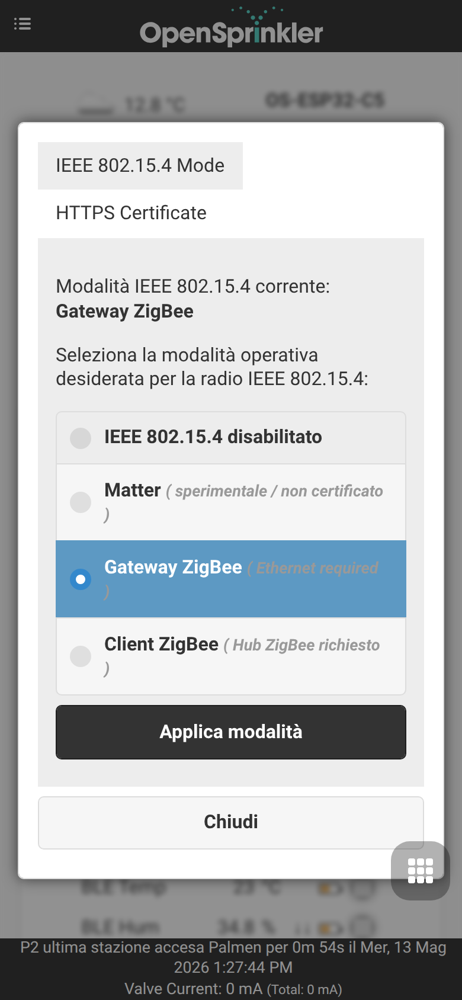
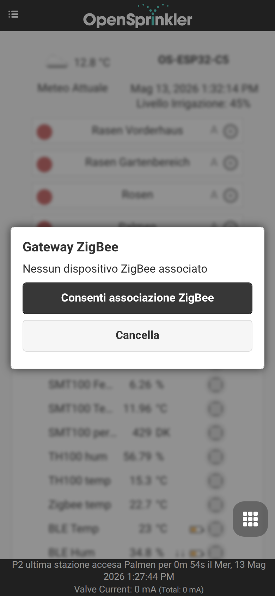
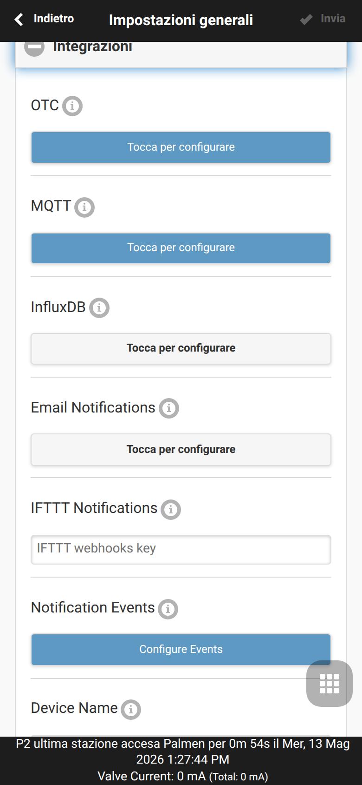

Integrazione Gateway Zigbee
OpenSprinklerPro offre funzionalità di coordinamento Zigbee native direttamente sulla scheda ESP32-C5. La soluzione a chip singolo ESP32-C5 supporta Wi-Fi 6 dual-band a 2.4 GHz, Bluetooth 5 (LE) e lo standard 802.15.4 (Zigbee 3.0 / Thread).
Utilizzando la variante Zigbee del firmware, il controller OpenSprinkler funge da coordinatore Zigbee completo. Può accoppiarsi con sensori domotici, valvole intelligenti, sonde per l'umidità del suolo e rilevatori di temperatura per regolare i programmi di irrigazione in base alle condizioni locali in tempo reale.
📸 Guida dettagliata alla configurazione
Questa guida passo-passo illustra come configurare la modalità radio, accoppiare i dispositivi Zigbee e mappare i loro attributi ai sensori analogici nel sistema.
Passo 1: Configurazione della modalità radio
Innanzitutto, verificare che il controller ESP32-C5 sia impostato sulla modalità radio corretta. Per impostazione predefinita, l'ESP32-C5 può funzionare in diverse modalità. Accedere alle impostazioni dal menu laterale sotto Setup ESP32 Mode.

Per utilizzare Zigbee, abilitare la modalità Zigbee Gateway / Coordinator. In questo modo viene inizializzata la radio nativa 802.15.4 per la gestione dei canali Zigbee, il routing dei dispositivi e la creazione della rete.
Passo 2: Associazione e accoppiamento dei dispositivi
Una volta attiva la modalità Zigbee, è possibile accedere alla pagina ZigBee Gateway dal menu laterale. Questa pagina consente di controllare la finestra di accoppiamento e di gestire i dispositivi fisici registrati.

- Fare clic su Permit Join (solitamente per 60 secondi) per aprire la rete a nuovi dispositivi.
- Mettere il dispositivo Zigbee (es. elettrovalvola intelligente GIEX, sensore del suolo Tuya o sensore di temperatura Xiaomi) in modalità di accoppiamento (di solito tenendo premuto il pulsante di associazione per 5 secondi).
- Il dispositivo verrà rilevato, gli verrà assegnato un indirizzo breve e verranno visualizzati l'indirizzo IEEE a 64 bit, il tipo di dispositivo e la qualità della connessione (LQI).
Passo 3: Opzioni di integrazione globale
Sotto Edit Options → Integrations, assicurarsi che gli avvisi Zigbee e le associazioni di coordinate siano attivi. Ciò consente al controller di convogliare in modo pulito i segnali esterni nel ciclo di pianificazione locale.

Passo 4: Configurazione multi-sensore e calibrazione
Per utilizzare i dati dei sensori per le regolazioni del programma, accedere a Analog Sensor Configuration dal menu a piè di pagina. Questa dashboard mostra tutti i sensori logici attivi, i loro collegamenti fisici e lo stato della batteria.

Passo 5: Aggiunta/Modifica di un sensore Zigbee
Fare clic su Add Sensor (o modificarne uno esistente) per mappare un attributo specifico del dispositivo Zigbee (come la percentuale di umidità del suolo o la temperatura) a uno slot per sensori analogici.

In questo editor è possibile: - Assegnare al sensore un Nome facilmente riconoscibile. - Scegliere il Tipo di sensore (es. umidità, temperatura, batteria, ecc.). - Selezionare il Dispositivo sorgente (Source Device) dal menu a discesa dei nodi Zigbee accoppiati. - Definire offset di calibrazione personalizzati e soglie di attivazione.
🛠️ Dispositivi supportati e dettagli tecnici
Il firmware interno supporta i cluster standard Zigbee 3.0: - 0x0402: Misurazione della temperatura (Tuya, Xiaomi, Sonoff) - 0x0405: Umidità relativa / Umidità del suolo (GIEX, Tuya, Moes) - 0x0001: Configurazione dell'alimentazione (rapporto percentuale della batteria)
Mappatura dei dispositivi multicanale
Quando si utilizzano valvole intelligenti multicanale complesse (come la valvola di irrigazione a doppia uscita GIEX GX02), il coordinatore suddivide i singoli stati delle valvole e i canali di telemetria in sotto-dispositivi logici separati. In questo modo si garantisce che ciascuna zona possa essere attivata o regolata in modo indipendente.
Coesistenza radio
L'ESP32-C5 gestisce simultaneamente le scansioni BLE, il traffico Wi-Fi 6 e i pacchetti Zigbee 802.15.4. Durante le scansioni dei sensori BLE, il protocollo Zigbee Packet Traffic Arbitration (PTA) abbassa momentaneamente la priorità degli endpoint Zigbee per evitare collisioni radio e perdita di pacchetti, ripristinando istantaneamente la priorità totale al termine della scansione attiva.